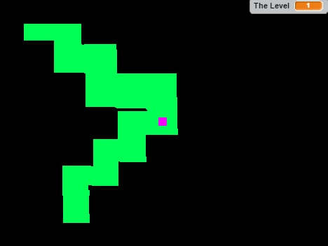

Final Project:
In my game there is a start screen to start playing. In the game there is a road of paths that a little square goes through and is controlled the up, left, and right, and down keys. You try to go through the path without hitting the black lines. Every time you pass a checkmark the speed of the square will increase making the game more difficult and it will display a text that says next level. The paths will be separate sprites but I will code them to connect. Also every time you die a list shows where you died at and what color your little square will be next round.